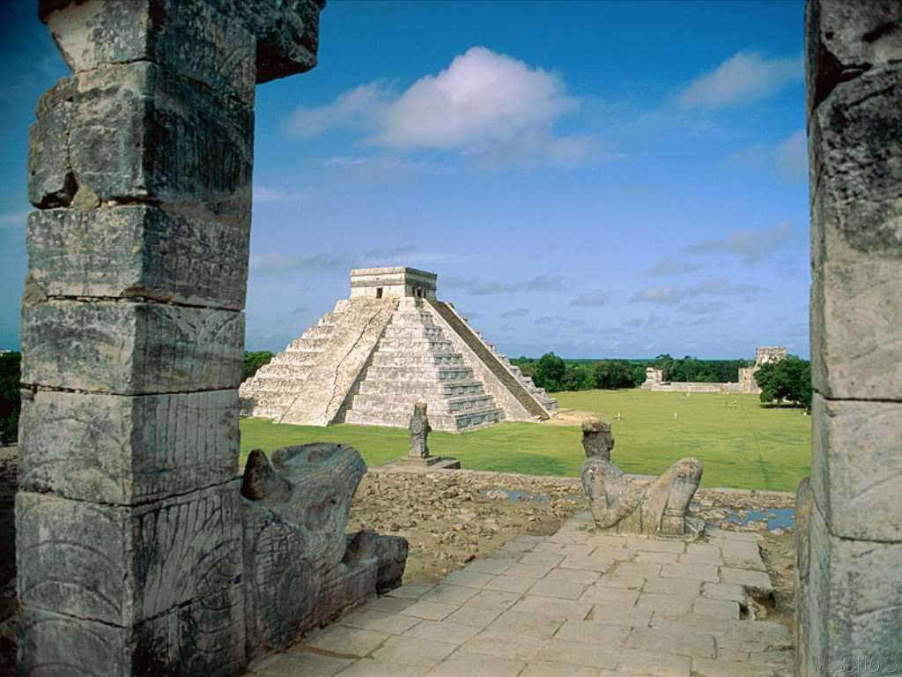
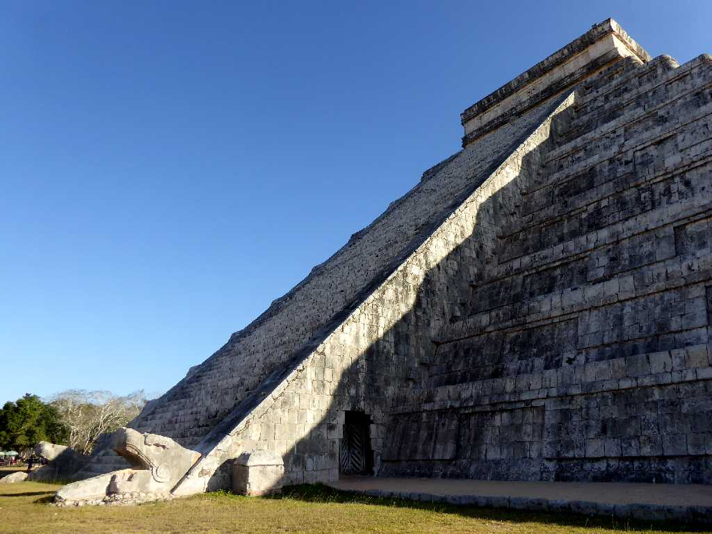
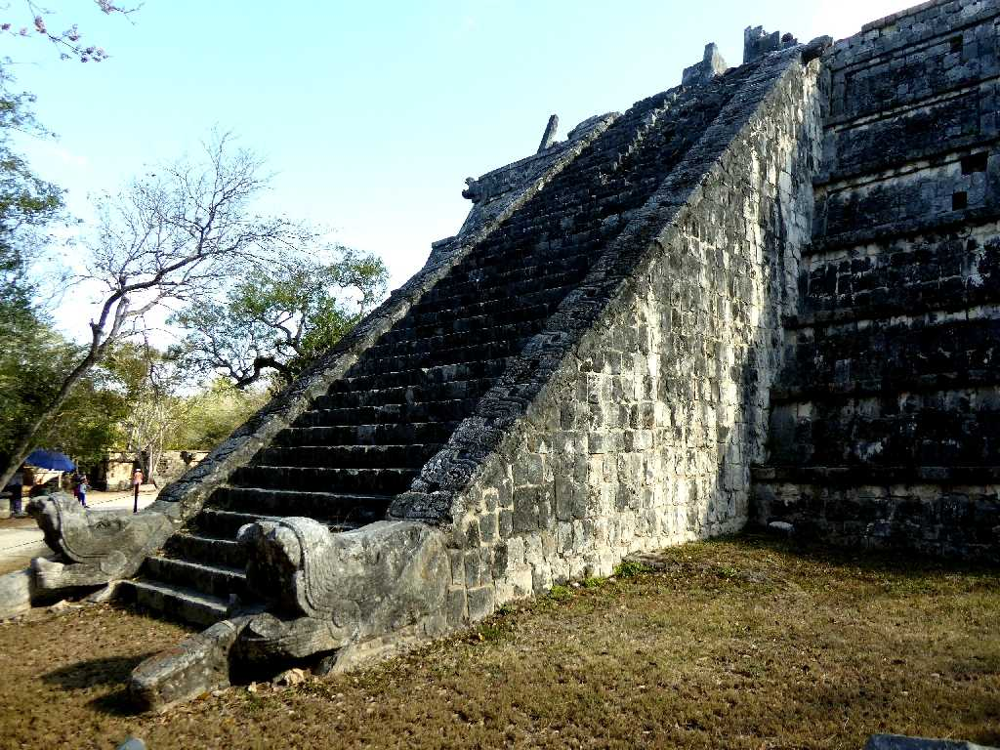
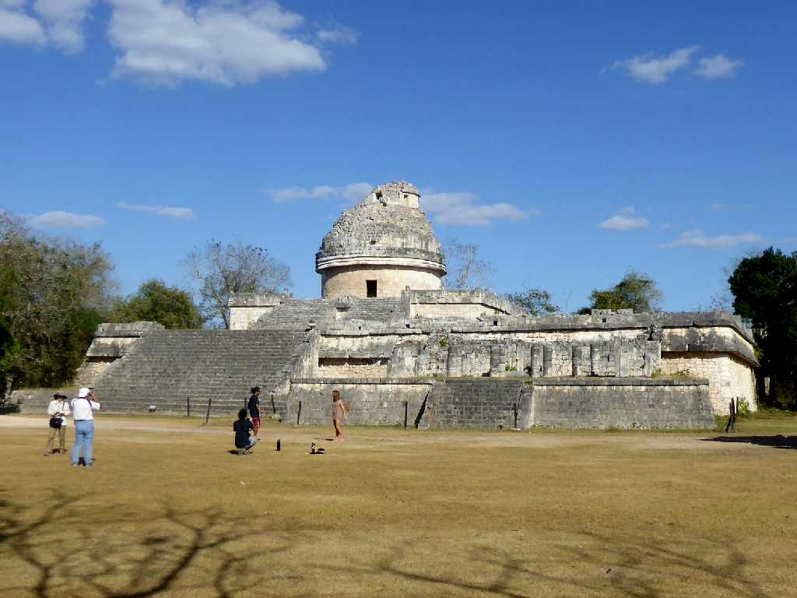
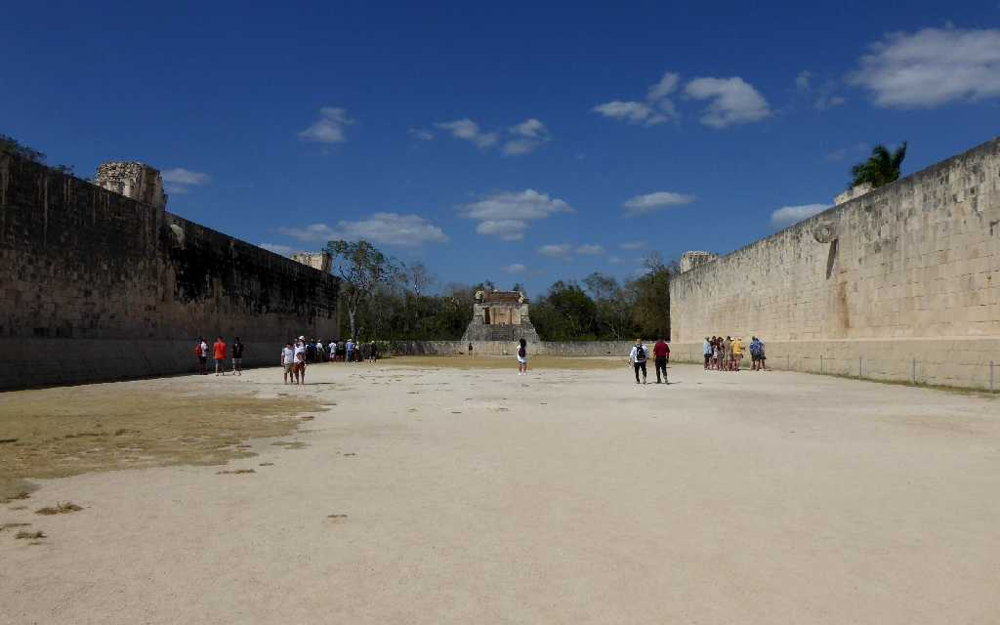
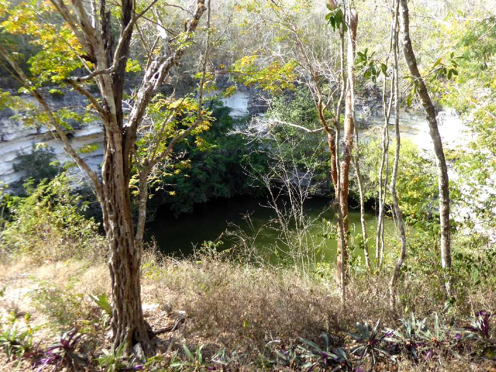
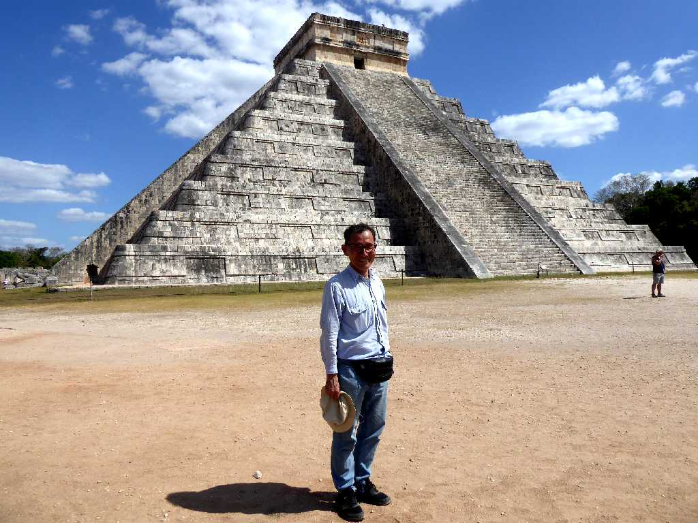
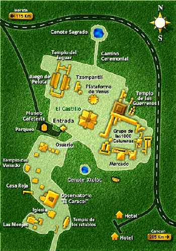

Templo de los Guerreros Chichén Itzá
北アメリカと南アメリカの交易の要として８世紀から１１世紀まで栄えたマヤ後古典期最大の都市遺跡 １０世紀ごろ創られたカスティーリョは底辺が６０ｍ高さ２３ｍあり頂上には神殿がある 四面に９１段づつの階段があり４×９１＝３６４日＋神殿１日＝３６５日となり「マヤのハアブ暦」を表している

El adviento de Kukulcán El Castillo Pirámide Chichén Itzá
約４０年ぶりの再訪問で春分に神殿から降りて来る羽毛のある蛇ククルカンが現れるククルカンの降臨を観る

El Osario Pirámide Chichén Itzá
新ピラミッドより１０００年も前に創られた高僧の墓と云われる旧ピラミッドにも既にククルカンの降臨を観る(約１時間前の降臨)ことができるのに驚かされる

El Caracol Chichén Itzá
天体観測をしていたと云われる天文台

El Gran Juego de Pelota
長さ１４６ｍ幅３６ｍある最も大きな球戯場

El Cenote Sagrado Chichén Itzá
聖なる泉からは金の供物や人間の骨などが出土し儀式の場所としても使われたと考えられている

March 19 2020 Pirámide Chichén Itzá
